Course project · RAS 557 Foldable Robotics · Arizona State University
A flea-inspired foldable jumping robot
Why a flea
At small scale, muscle cannot produce the acceleration a ballistic jump needs. Fleas get around that with latch-mediated spring actuation: the muscle contracts slowly to load a resilin pad in the thorax, a mechanical latch holds the animal in that high-energy state, and releasing the latch dumps the stored energy in milliseconds. Power production is decoupled from power release, so takeoff speed is set by the spring rather than by how fast the muscle can shorten — 1.3 to 1.9 m/s in the animal, with the body rotation during flight governed mostly by leg geometry rather than by active control.
That last point is what makes it a foldable-robotics problem. At the gram scale you cannot afford motors and high-bandwidth feedback, so behaviour has to be designed into the structure. The question we took on was narrow and testable: where should the spring attach to the linkage to maximise jump distance, and does a folded laminate built to that answer behave the way the simulation says?
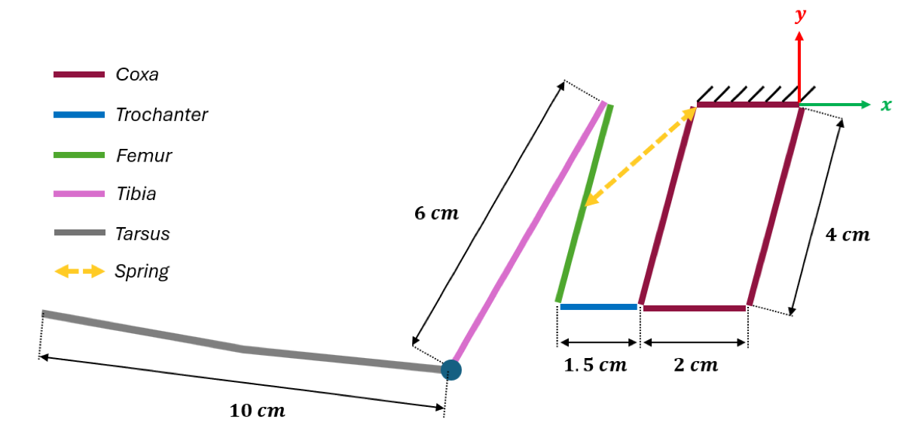
The simulation model
The model is a planar rigid-body simulation in MuJoCo, constrained to the \(x\)–\(z\) plane. A floating trunk carries the leg chain: coxa, trochanter, femur, tibia–tarsus. The coxa is a four-bar parallelogram with \(L_1 = L_3 = 0.04\,\text{m}\) and \(L_2 = L_0 = 0.02\,\text{m}\), which is the part that matters mechanically — a parallelogram holds the trochanter at a fixed orientation relative to the trunk as the leg extends, so the leg's extension angle is decoupled from body pitch. The femur is \(L_5 = 0.04\,\text{m}\) and the tibia \(L_6 = 0.05\,\text{m}\), joined by revolute joints with damped limits so the leg cannot hyperextend in flight.
The tarsus is modelled as a single point with friction \(\mu = 0.99\). That is deliberate: in the animal the tarsus is a gripping surface covered in hairs that anchors the foot rather than pushing off it, so a high-friction point captures the behaviour without modelling the contact patch.
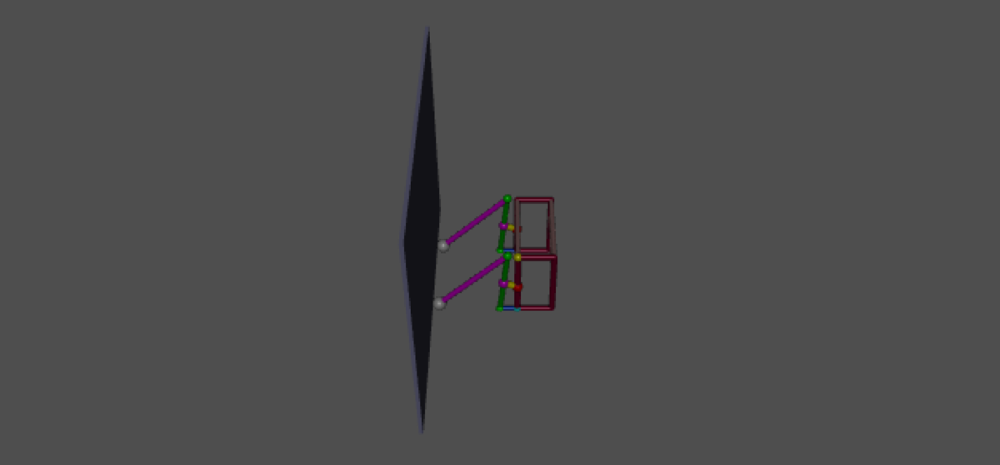
Energy storage is a massless linear tendon spanning the coxa and the femur. Rather than simulate a muscle contracting, the release is approximated by shortening the tendon's rest length instantaneously at \(t = 0\), which injects
\[ U = \tfrac{1}{2}k\,\delta^{2} \]where \(k\) is the tendon stiffness and \(\delta\) the preload — the amount by which the rest length is offset from the current length. In the model \(k = 150\,\text{N/m}\), damping is \(0.5\,\text{N}\cdot\text{s/m}\) and \(\delta = 0.07\). Integration runs for 2.0 s at a fixed \(10^{-4}\,\text{s}\) timestep.
Spring, as a MuJoCo tendon
<tendon>
<spatial name="Palpha_Pbeta_spring"
stiffness="{k_spring}" damping="{d_spring}"
width="0.002" rgba="1 1 0 1">
<site site="spring_coxa_site"/>
<site site="spring_femur_site"/>
</spatial>
</tendon>Releasing the latch: offset the rest length, then re-solve
L_now = float(data.ten_length[spring_id])
# stores energy 1/2 * k * delta^2
model.tendon_lengthspring[spring_id, 0] = L_now + delta
model.tendon_lengthspring[spring_id, 1] = L_now + delta
mujoco.mj_forward(model, data) # update forces with the new rest lengthBaseline behaviour
The jump separates cleanly into three phases: a propulsive stroke below roughly \(t < 0.1\,\text{s}\), ballistic flight, and landing impact. The useful result from the baseline run is that the coxa parallelogram does its job — it directs the ground reaction force through the centre of mass, which suppresses the backward pitch that is the usual failure mode for a single-leg jumper.
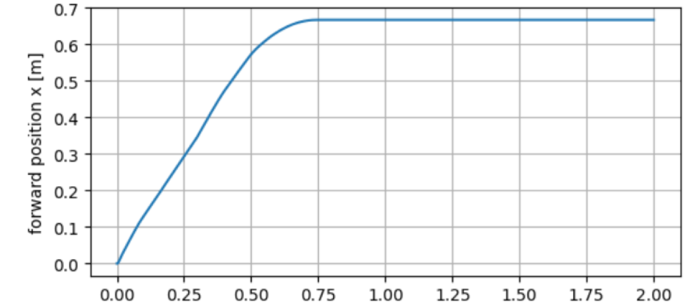
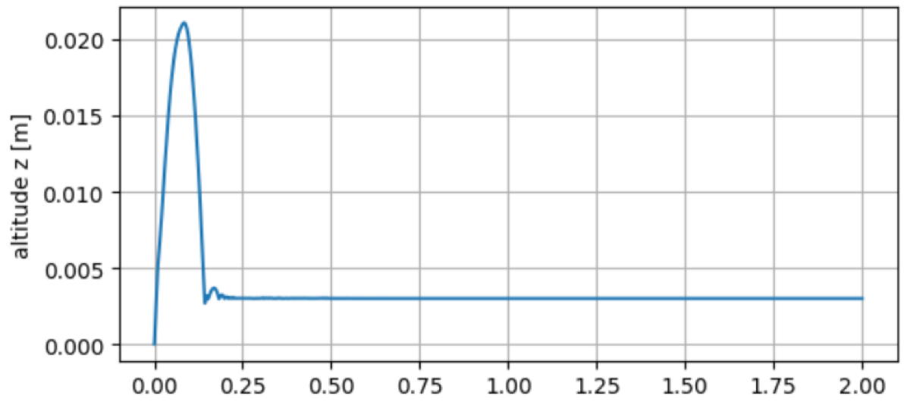
The performance metric for everything that follows is net forward displacement of the trunk, \(x_{\max}\). Distance rather than height, on the assumption that the animal is trying to get somewhere.
Optimising the spring placement
How much of the stored energy reaches the ground depends on where the spring is anchored, because the attachment points set the moment arm through the whole extension. We defined two dimensionless variables: \(\alpha\) for the normalised position along the coxa, \(\beta\) for the position along the femur, both in \([0.1, 1.0]\).
The search is deliberately unsophisticated — a nested grid sweep that rebuilds the model XML for each pair, runs the forward dynamics and reads off \(x_{\max}\), followed by a refined sweep around the winner to cut discretisation error. With a 2D parameter space and a simulation this cheap, a grid search is the honest choice: it also shows you the shape of the landscape, which a gradient method would not.
One evaluation
def simulate_jump(k_spring, alpha, beta, duration=2.0):
xml = make_xml(alpha, beta, k_spring)
model = mujoco.MjModel.from_xml_string(xml)
data = mujoco.MjData(model)
...
while data.time < duration:
mujoco.mj_step(model, data)
max_x = max(max_x, data.xipos[trunk_bid, 0])
max_z = max(max_z, data.xipos[trunk_bid, 2])
return max_z, max_xCoarse sweep, then a refined sweep around the best point
alphas = np.linspace(0.1, 1.0, 20)
betas = np.linspace(0.1, 1.0, 20)
for i, a in enumerate(alphas):
for j, b in enumerate(betas):
zmax, xmax = simulate_jump(k_spring, a, b, duration=0.5)
max_x_grid[i, j] = xmax
i_x, j_x = np.unravel_index(np.argmax(max_x_grid), max_x_grid.shape)
# coarse: alpha*=0.38, beta*=0.38, x_max=0.5671 m
alphas_opt = np.linspace(max(alphas[i_x] - 0.2, 0), min(alphas[i_x] + 0.2, 1), 20)
betas_opt = np.linspace(max(betas[j_x] - 0.2, 0), min(betas[j_x] + 0.2, 1), 20)
# refined: alpha*=0.44, beta*=0.50, x_max=0.5729 m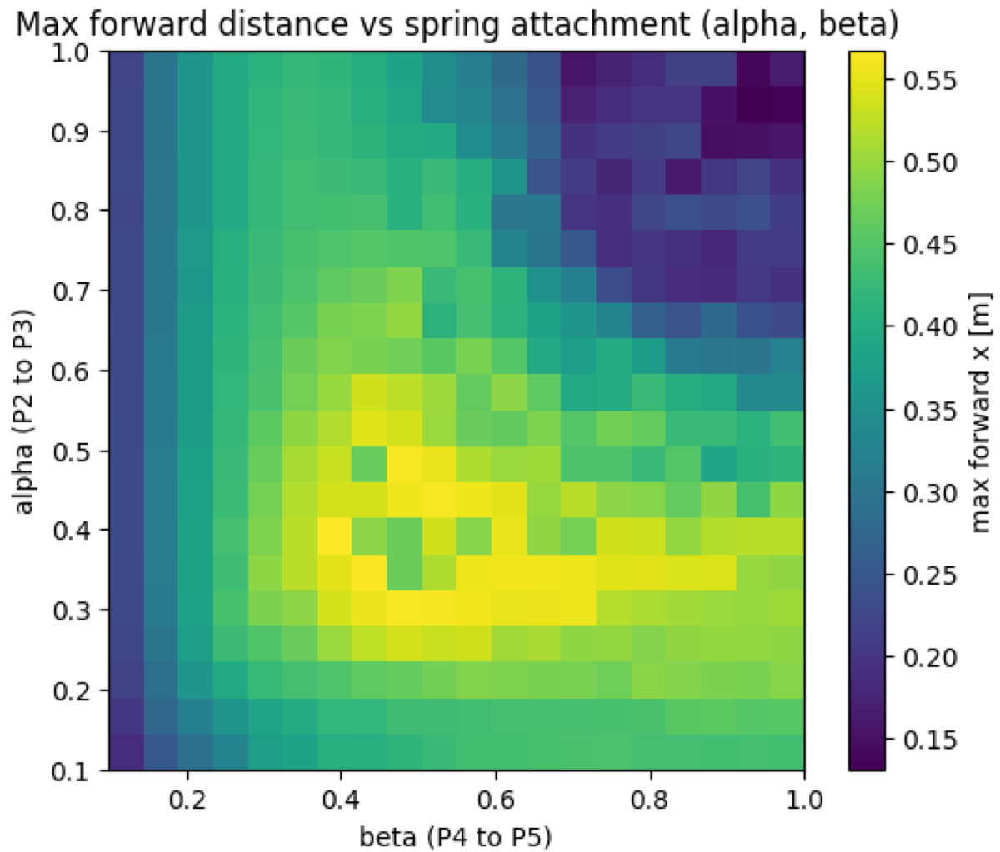
The refined optimum is
\[ \alpha^{*} = 0.44 \qquad \beta^{*} = 0.50 \]giving a predicted forward distance of \(0.5729\,\text{m}\). The femoral attachment lands exactly at the segment midpoint, which is the balance point between a long moment arm and the angular velocity the joint has to reach.
A separate sweep of \(k\) on a logarithmic scale up to \(150\,\text{N/m}\) confirmed that the chosen stiffness sits in a stable region rather than near a numerical divergence.
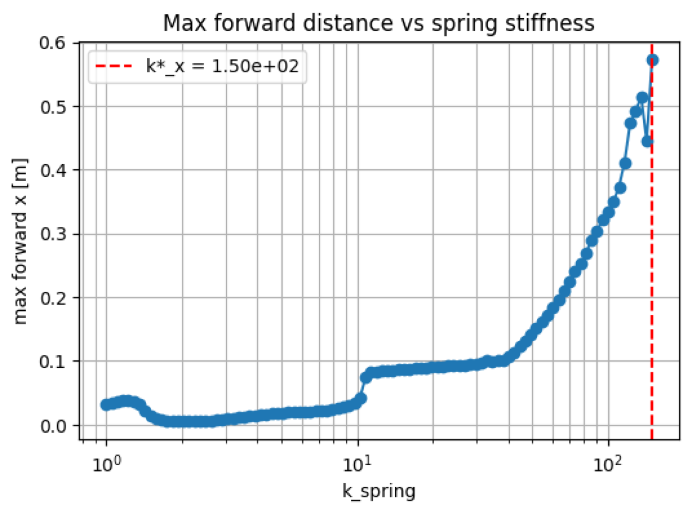
Building it
The prototype is a five-layer laminate, following the course's manufacturing workflow. Two design revisions were cut in LibreCAD; the second adds the tarsus, which the first omitted on the reasoning that the flea does not push off it — the point of adding it back was friction at the contact, matching the high-\(\mu\) point in the model.
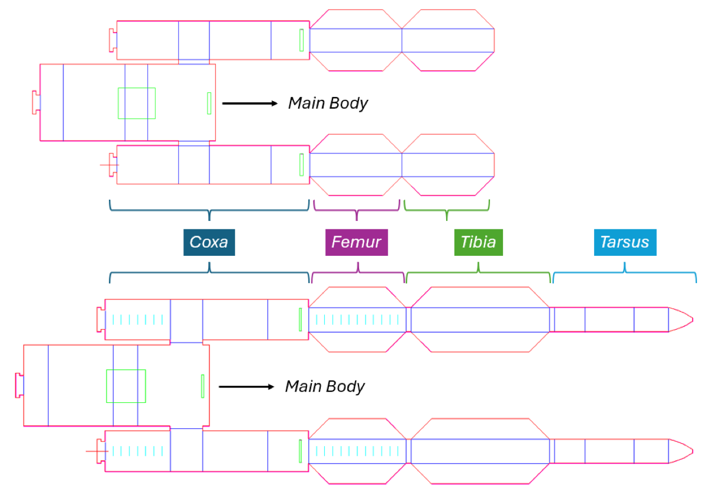
The coxa is folded as a four-bar closed with a T-lock. The femur and tibia are built as triangular shell sections — the fold geometry is doing the work of a stiffener, raising the second moment of area so the legs stay rigid under the release load. The main body is also a four-bar with a T-lock, but it houses the motors and is not meant to articulate.
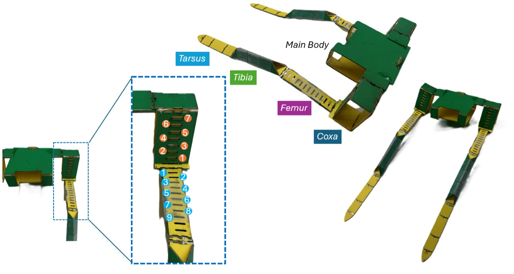
The spring is a piece of bistable metal tape. Its bistability is not used here; what makes it useful is that cutting it to different lengths gives a tunable stiffness from one material. Three 15 mm-wide straps at 8, 6 and 4 cm give soft, medium and hard.
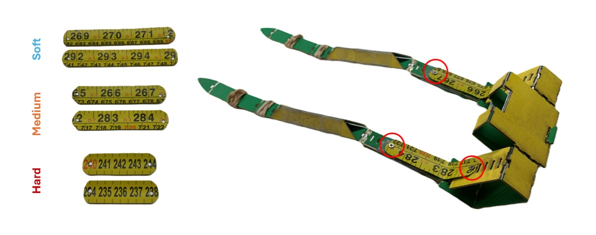
The latch is a ratchet rack and pinion. A servo turns the pinion, which pulls the rack and closes the coxa–femur joint against the spring. The pinion is only toothed over \(180^{\circ}\), so half a revolution later the rack runs off the teeth and releases — that is the latch function, done geometrically rather than with a separate mechanism. A vertical slider converts the rack's linear travel into the joint's combined rotation and translation, and back again when the spring drives it.
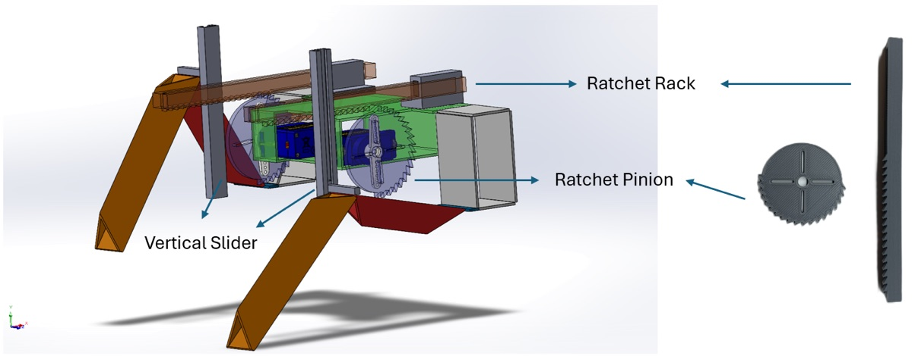
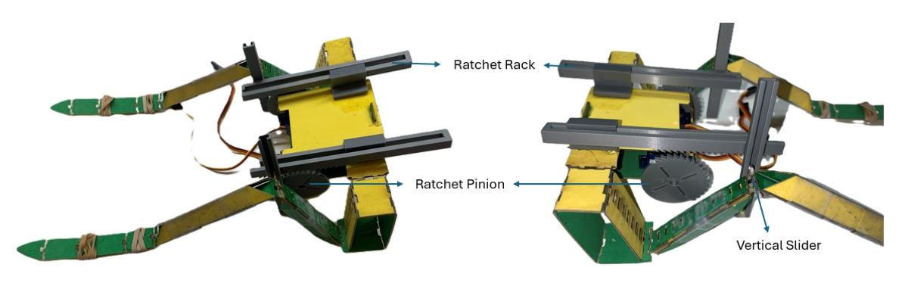
What actually happened
The drive train did not work. Even with the soft spring fitted, the servos could not pull the rack back far enough to load the joint — the minimum stiffness needed to launch the body at all was above what two Tower Pro SG90 servos could overcome. That is the honest headline result, and it is a mass-and-torque problem rather than a design error in the linkage: the drive train that loads the spring is nearly three times the mass of the structure it is trying to launch.
So the jump itself was characterised passively: the tibia braced against a fixed mass, the joint closed by hand, and released. That isolates exactly the thing the simulation predicts — what the linkage and spring do with stored energy — from the question of what loads the spring.
Trajectories were recorded with an OptiTrack motion capture system at 120 Hz. Each take was exported separately and cleaned, which was necessary because hands in the workspace occluded the markers during loading. The three tracking markers weigh 19 g, close enough to the two servos they replaced that the jumping mass stays representative.
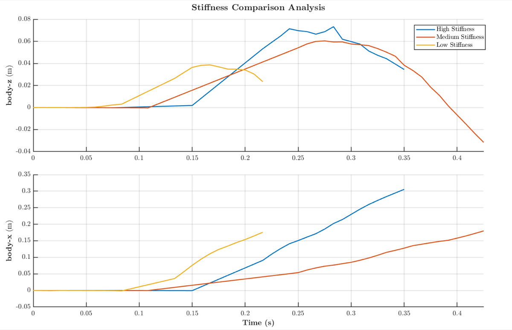
The soft spring barely moves the body in either direction. Medium and hard both throw it a useful distance and reach relative heights of around 8 cm, and the stiffer the joint, the higher the initial velocity in both axes. Three stiffness values is too coarse to claim an optimum — finding the compromise between distance and height needs a denser sweep than three cut lengths of tape.
Simulation against reality
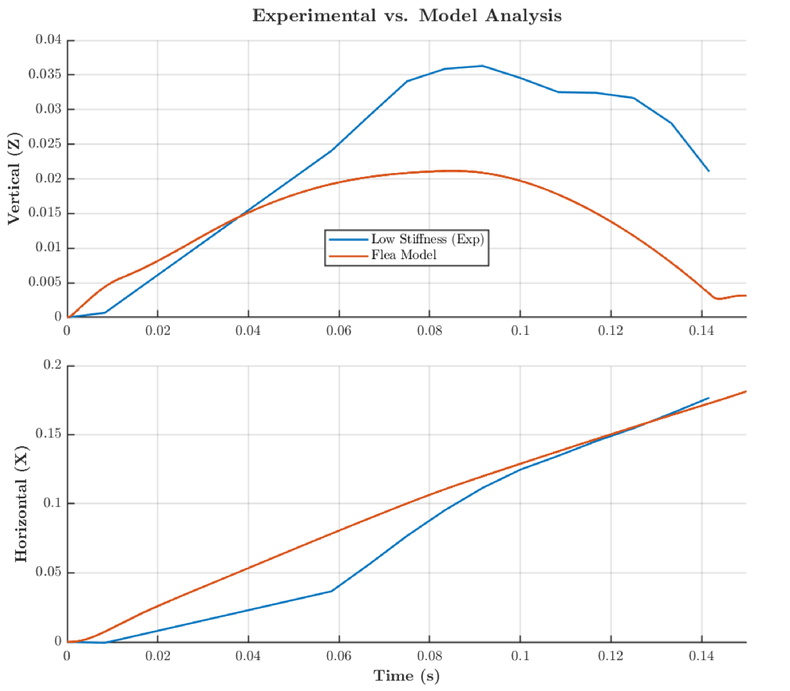
Vertically, takeoff and landing timing line up well, though the height does not — closing that gap needs the mass and inertia distribution to be modelled more carefully than a first pass does. The forward motion matches in trend, which is the part that matters here, since forward distance is what the optimisation was maximising. The model captures the forward dynamics well enough for the \((\alpha, \beta)\) result to mean something physically.
What I would do next
The obvious hardware change is to replace the discrete attachment slots with a continuous sliding rail. Right now \(\alpha\) and \(\beta\) are quantised by where the holes are, so the physical robot cannot actually be set to the optimum the simulation found. A rail makes the parameter continuous and lets you tune on hardware instead of only in simulation.
It also opens up something more interesting: if \(\alpha\) and \(\beta\) can be set before each release, a single spring of fixed stiffness gives a whole range of jump behaviours. The geometry becomes the control input — which is the same mechanics-first idea the project started from, used deliberately rather than as a constraint.
Team project with Amirali Abazari and Jake Strube for RAS 557 Foldable Robotics at Arizona State University. My contribution was the MuJoCo model and the spring-placement optimisation. The full write-up is in the report, and we also built a project website for the course.